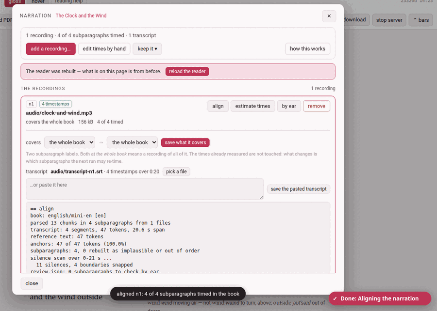

Adding a narration
A narration is added after the book exists, from the reader: narration in its header — add a narration, highlighted, in a book that has none yet. It opens the narration panel over the page and pauses the recording.

1. The panel#
A book’s narration is a list of recordings, and the panel is that list: one row per recording, saying which file it is, what stretch of the text it covers, and how much of that stretch is timed. Everything that can be done to a recording is done from its own row.
Above the list is what is about the book:
- a summary: 1 recording · 4 of 4 subparagraphs timed · 1 transcript (and how many times were fixed by hand);
- in red, whatever is wrong —
book.jsonnaming a recording or a transcript that is not there, a transcript with no timestamps in it, saved times that no longer match any subparagraph because the text was edited after they were measured, ffmpeg missing; - add a recording… — the one way to put a recording in;
- edit times by hand — closes the panel and turns on edit times (Fixing the timings);
- keep it ▾ — the narration file, below;
- how this works — the short version of this page, in the panel.
Almost everything here ends by rebuilding the reader, and the page on the screen was built before: a bar then says The reader was rebuilt — what is on this page is from before with reload the reader, and closing the panel (close, ✕ or Esc) reloads it for you. Every action is on the Working… indicator while it runs, and the panel waits, its buttons disabled, until it is done. Opened from the disk, the panel says it cannot reach the server.
2. Adding a recording#
add a recording… opens the book as an outline and a button:
- covers — what this recording reads, picked in the outline (Picking a part of the book): a chapter is one click, a stretch of chapters a Shift-click more, and a paragraph opens on its subparagraphs for a recording that starts or ends inside one. Nothing picked is the whole book. The recordings already there are marked (n1, n2) on the rows they cover, so a gap or an overlap shows before it is made.
- pick the audio file — mp3, m4a, webm, ogg, opus, wav… The file is copied into the book’s own
audio/folder, with a progress bar while it goes up. A narration is yours, and large: it is never committed to git.
What happens next depends on the first step:
- A stretch picked.
- The file joins the recordings already there, and — since it has no transcript yet — is given a first guess at its times as it lands: the recording is shared out over the stretch it covers, each subparagraph a slice in proportion to how much text it has. It plays at once; what drifts is nudged afterwards, by ear.
- The whole book.
- The file becomes the book’s one recording, untimed until you align it or estimate its times. On a book that already has one recording, you are asked first — Replace n1? — because the old file then stops being the narration. It stays in
audio/, and the times intimings.jsonstay as they are, read from then on as times in the new file. To keep both, cancel and pick the stretch the new one covers.
A toast says clock-and-wind.mp3 is on the shelf (and how many subparagraphs got a first guess).
3. A recording’s row#
Each row carries its id (n1, n2…, the name book.json and timings.json know it by), tags — N timestamps when it has a usable transcript, no transcript, transcript unusable, file missing — the file’s name, and a line of facts: covers the whole book · 156 kB · 4 of 4 timed · 1 by hand, or covers chapter 2 · The Wind · 38 subparagraphs · …. Where a button cannot be used, a line under it says why. The four buttons:
| Button | What it does |
|---|---|
| align | works this recording’s times out from its own transcript (below). Needs a transcript with timestamps. |
| estimate times | shares the recording out over the stretch it covers, in proportion to the length of each subparagraph: a first guess, no transcript needed. Needs to know how long the file is — ffmpeg, or a .wav. |
| by ear | opens the boundaries between one subparagraph and the next over a picture of the sound: Fixing the timings. Needs times to move. |
| remove | takes the recording off the book. The file itself stays. |
A click on the row’s name opens its drawer:
- covers — what it covers, in words, and change…, which opens the outline on that stretch, with save what it covers. The times already measured are not touched: what changes is which subparagraphs the next run may re-time.
- transcript — the one this recording has, and how many timestamps over how long; pick a file, or paste one into the box and press save the pasted transcript.
- the log of the recording’s last run, when it said something.
What a run said stays in its row until the next one, and a toast says so too.
4. Transcripts#
A transcript is a time index, never a text: not a word of it goes into the book. It tells the aligner roughly when each thing is said; the book says what. Any of these will do:
- YouTube’s transcript copied whole, from the video’s …more → Show transcript panel: click into the panel, select all, copy, and paste it into the row’s box. The N seconds lines can stay.
- a subtitle file,
.srtor.vtt; - the subtitles a speech-recognition program such as whisper writes for a recording of your own.
It belongs to one recording, and is given to it from inside its row: a book recorded in parts has one transcript per part.
5. Align#
align runs the aligner over that one recording: the transcript says roughly when, the text says what, and the cuts are snapped to the silences in the sound. It writes the times into timings.json and into the chapter files (as % @par comment lines above each subparagraph), and rebuilds the reader and the library page. The row says aligning… a minute or two for a whole novel; the toast then says aligned n1: 4 of 4 subparagraphs timed in the book, and the log in the row gives the details — how many times were anchored, how sure it is of each, which ones to check by ear.
A recording that already has times asks first — Align n1 again? — and re-aligning keeps the times you fixed by hand, unless you tick start over, dropping the times fixed by hand. A first guess made by estimate times does not count as fixed: aligning replaces it without the tick.
Two helpers make the alignment better and neither is required: rapidfuzz (without it the matching is plainer and rescues fewer near-misses) and ffmpeg (without it the cuts are not snapped to silences, and a recording’s length can only be read from a .wav). how this works says which are installed.
6. Estimate times#
estimate times needs no transcript: it lays a first guess over the whole stretch the recording covers. The guess says what it is — a guess, at a low confidence — so an alignment later replaces it. On a recording that already has times it asks first, Give n1 a first guess?, and a stretch already timed for real is refused unless you tick lay the guess over the times already there. The toast says how many subparagraphs were given a guess: play them and fix what drifts.
7. A book in several recordings#
A book need not be recorded all at once. Give each file the stretch it covers, and each becomes a row of its own:
- The files stay apart.
- Nothing is joined: each recording is the file you made, in
audio/, and the reader moves from one to the next as you read across the seam. - Each has its own clock.
- A recording’s times are seconds into that file, so every part starts near zero.
- Aligning one touches only its own text.
- align on a row re-times the subparagraphs that recording covers and leaves every other part as it was. It is also the easier alignment: a few minutes of sound against a few paragraphs, rather than a novel against six hours.
A book with one recording is simply a list of one, covering the whole book.
8. Removing a recording#
remove asks first — Take n1 off the book? — and says what it does: the file stays in audio/, and the times it measured stay in timings.json. To have it back as a recording, use add a recording… again and say what it covers.
9. A narration found elsewhere#
An audio file lying where the toolbox has kept narrations — the file timings.json was made against, the root audiobook/ folder of an earlier layout, the book’s own folder or its audio/ — that no recording of the book names (a recording you removed, say) is listed under found elsewhere, with its size and where it was found, and use <file>. Using it (after a question) points book.json at that file and rebuilds the reader; the times already in timings.json are kept and nothing is re-aligned. It does not join the list of recordings — add a recording… is what does that.
10. Keeping a narration: keep it ▾#
- export a narration file
- downloads one zip holding the recording, its transcript, the times and a small manifest — to keep beside the book, or to give to someone who has the same edition. A book in several recordings exports its first recording only, and the tooltip says so.
- import a narration file…
- takes such a zip on another copy of the book and lays it over this book’s narration: the audio and the transcript go into
audio/,book.jsonis pointed at them, and the times inside replacetimings.jsonwhole — the times fixed by hand included. Where the book already has a narration you are asked first. The previous times are kept asaudio/timings.before-import.json.
To take the whole book with its narration, use the reader’s download instead (Taking a book away).